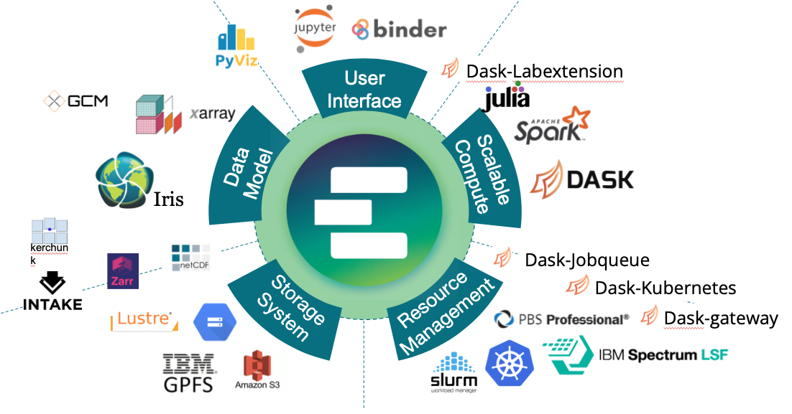
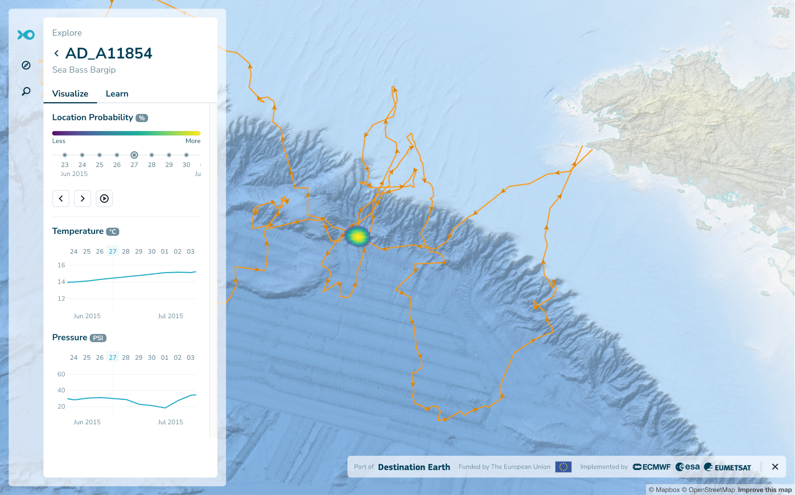
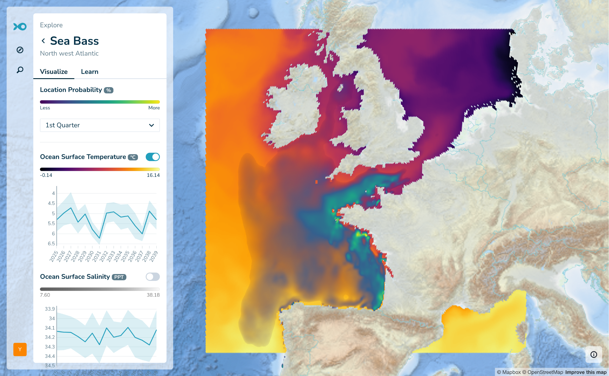
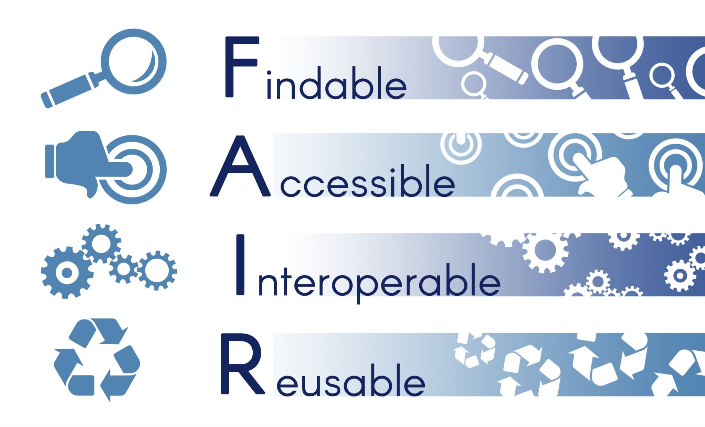
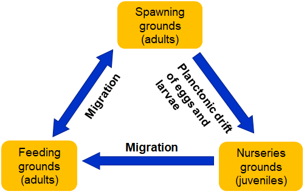
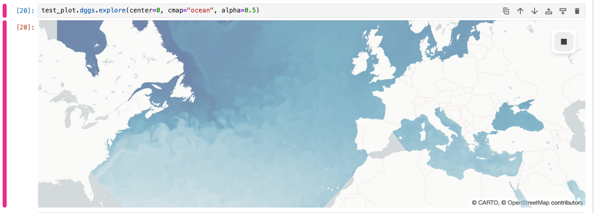

GFTS FR Final Report
Introduction
This is the final report of the Global Fish Tracking Service (GFTS) project. This project has developed one of the first use cases for the DestinE Platform over the past year and a half. In this time period there has been a lot of development, both for what we have done in the use case itself, but also in the DestinE universe. When this project started, the DestinE Digital Twins were still in their very early stages, and the DestinE platform was not launched officially. Our use case has been part of the impressive evolution that DestinE has since gone through, and we have arrived at an exciting result that we hope shows
Advances made by GFTS
This section describes the outputs of the Global Fish Tracking System (GFTS) project, which has developed one of the first operational use cases for the DestinE Platform. Our work has addressed multiple technical and scientific domains through an integrated approach combining software development, scalable infrastructure deployment, and decision support capabilities.
Advances in Pangeo-Fish Software
The GFTS project has enhanced the pangeo-fish software package, transforming it from a prototype research tool into a production-ready solution for fish track reconstruction. The software was originally developed in 2016 but lacked the scalability required for processing large-scale biologging datasets. During this project we have embedded the Hidden Markov Model-based fish track reconstruction algorithm within the Pangeo ecosystem, creating a software framework capable of handling extensive tagging campaigns with hundreds of individual fish tracks.
Our enhancements include improved data access mechanisms for processing high-resolution temperature and pressure time series from archival tags, integration with acoustic detection data from underwater hydrophone networks, and optimization for processing DestinE Climate Digital Twin data alongside Copernicus Marine Services datasets. The software now supports seamless integration with geophysical reference fields including temperature at depth and bathymetry data.
The pangeo-fish software maintains FAIR principles throughout its workflow and has been released under an open source license during our project. It can be accessed on GitHub with the following link:
[https://github.com/pangeo-fish/pangeo-fish]
Figure: An illustration of the Hidden Markov Model that is used in pangeo-fish.
Scalable Processing Platform Development
We have established a scalable processing platform that addresses the resource-intensive nature of fish track reconstruction modeling. The platform leverages Kubernetes-based auto-scaling capabilities built on the DestinE Platform infrastructure, automatically adjusting computational capacity based on demand. This architecture has been tested with large biologging datasets, including Seabass populations along the French Atlantic coast. The processing platform is production ready but access is only granted as an on demand and by invitation only basis to new users. The reason for this is that the resources required for running fish track modeling can be quite high, which will potentially incur significant costs. To ensure that we are able to sustain the modeling, we need to have clear control and understand the usage of the fish track reconstruction environment.
The processing environment provides researchers with on-demand access to a fully configured Jupyter environment that scales dynamically according to analytical requirements. Users can upload biologging data, perform modeling operations, and store outputs in secure cloud storage within an integrated workflow.
Our platform implementation includes data preparation pipelines that convert individual fish tracking results into standardized formats suitable for decision support applications. These processes involve data filtering, quarterly aggregation, and conversion to optimize Parquet file formats for web-based visualization. The system incorporates native HEALPix format support, enabling direct visualization of data without distortive resampling operations.
The source code for the processing environment can be accessed on GitHub through the following link
[https://github.com/destination-earth/DestinE_ESA_GFTS]

Figure: Illustration of the Pangeo software ecosystem
Decision Support Tool Implementation
The GFTS decision support tool provides an interactive platform for visualizing fish track data designed for policy makers and marine spatial planners. The tool integrates reconstructed fish tracks with DestinE Climate Digital Twin projections to enable scenario analysis for future habitat conditions. The decision support tool has been deployed as an operational service on the DestinE platform.
The web-based interface allows users to explore individual fish tracks, examine seasonal habitat distributions created by combining individual fish tracks with statistical analysis, and evaluate future environmental conditions affecting critical fish habitats. The system processes species-level data by quarter, creating probability distributions that represent fish presence patterns corresponding to biological seasons such as spawning and feeding seasons. These distributions are intersected with DestinE Climate Adaptation Digital Twin data to provide yearly projections for surface temperature and salinity conditions for the current fish habitats.
The decision support tool supports both group-level analysis and individual track examination. Users can visualize most probable tracks as geographic trajectories, explore probability clouds for specific time periods, and access detailed pressure and temperature measurements from fish tags. The interface integrates with DestinE Platform authentication workflows and provides controlled access to DestinE users.
Our visualization approach renders data directly from native HEALPix format, avoiding distortion inherent in traditional latitude-longitude grid conversions while maintaining data integrity.
The source code for the decision support system can be accessed on GitHub through the following link
[https://github.com/developmentseed/gfts/]

Figure: Screenshot of the GFTS Decision Support Tool view of a single fish track.

Figure: Screenshot of the GFTS Decision Support Tool of a fish species by quarter.
Open Source and Open Science Commitment
Throughout the GFTS project, we have maintained a commitment to open source principles, open data accessibility, and open science methodologies. All software developments are released under permissive licenses with backend components utilizing Apache 2.0 licensing and frontend applications published under MIT licensing. Our complete codebase is accessible through several public GitHub repositories.
The project maintains comprehensive documentation through a dedicated website built using JupyterBook technology and continuously updated throughout the project lifecycle. Where possible, our documentation releases receive permanent Digital Object Identifiers through Zenodo integration, enhancing the FAIR characteristics of our software components. We have documented our integration experiences with the DestinE Platform and maintain active communication channels through GitHub issue tracking systems for community assistance. We have also participated in more than 10 international conferences presenting our work to different audiences.

Figure: Illustrating of the FAIR principle framework that this use case has followed
Implementation and System Utilization
This section examines the practical application of the GFTS platform through comprehensive analysis of two key marine species that served as the foundational dataset for system development. The implementation represents both the first operational deployment of GFTS capabilities and the primary driver of an iterative co-design process with IFREMER scientists. Through continuous collaboration and agile development principles, the processing of these datasets directly informed technical design decisions, user interface development, and analytical workflow optimization, ensuring the resulting platform addresses real-world scientific and policy-making requirements.
IFREMER Biologging Data Processing
The GFTS platform processed extensive biologging datasets collected by IFREMER from European sea bass and Pollock campaigns along the French Atlantic coast. The sea bass dataset included more than a thousand tagged individuals with over 400 recovered tags from the primary BARGIP campaign, while the pollack analysis processed more than a dozen recovered tags combining both archival and acoustic tracking data.
The pangeo-fish software implementation utilized Hidden Markov Models to reconstruct fish trajectories from temperature and pressure time series collected at short intervals. The computational framework leveraged the scalable DestinE Platform infrastructure to process dozens of individual tracks simultaneously, overcoming the resource limitations that previously constrained this type of analysis to smaller datasets. Each track reconstruction involved evaluating millions of possible position states against reference oceanographic conditions, a computationally intensive process that demonstrated the platform’s capacity to handle large-scale biologging analyses.
The processing workflow integrated multiple data streams including biologging sensor measurements, bathymetric references, and oceanographic temperature fields from both Copernicus Marine Services and DestinE Digital Twin sources. The pangeo-fish algorithms successfully generated probabilistic fish position estimates along with uncertainty quantification, producing both most probable tracks and daily presence probability distributions essential for habitat assessment and conservation planning.
Climate Digital Twin Data Integration
The integration of DestinE Climate Adaptation Digital Twin data represents a significant innovation in fish habitat analysis. For this project we evaluated multiple climate models including ICON, IFS-FESOM, IFS-NEMO outputs to extract temperature and salinity fields corresponding to reconstructed fish track locations. For the data shown on the decision support tool we relied on the IFS-NEMO because it is the best choice, having data predictions available until 2040 for all the required variables.
Climate DT data processing involved temporal aggregation across quarterly periods to align with biologically meaningful seasons such as spawning and feeding periods. In our system we calculated intersection analyses between fish presence probability distributions and future ocean conditions, potentially enabling assessment of habitat suitability under different climate change scenarios. This analytical capability provides unprecedented insights into potential future shifts in essential fish habitat conditions.
The processing framework utilized the native HEALPix gridding system employed by both the pangeo-fish reconstruction algorithms and portions of the DestinE Climate Adaptation DT datasets. This approach eliminated the need for spatial resampling and associated data distortion, preserving the integrity of both biological and climate projections throughout the analytical workflow. The system’s ability to visualize data directly in HEALPix format represents a technical advancement that benefits the broader scientific modeling community.
Decision Support Tool Integration
All analytical outputs from the fish track reconstruction and climate data processing have been successfully integrated into the operational GFTS decision support tool. The platform launch includes complete datasets for both target species, providing immediate access to interactive visualizations and analytical capabilities for marine conservation planning.
The integration encompasses multiple data products including individual fish tracks, seasonal habitat probability distributions, and future climate exposure assessments. Users can explore quarterly species distributions that reveal spawning and feeding area dynamics, access individual fish trajectories, and examine projected changes in habitat conditions under climate change scenarios.
The system’s deployment as an operational service on the DestinE Platform ensures accessibility to authorized users. The decision support tool’s launch represents the culmination of the technical development process and establishes GFTS as a functional resource for evidence-based marine conservation and fisheries management decision-making.
Impact of GFTS
Addressing Critical Limitations
The Global Fish Tracking Service (GFTS) was developed to address critical limitations in marine conservation and fisheries management where existing tools lack sufficient scalability to process extensive biologging datasets. Current approaches to marine spatial planning rely primarily on statistical data without spatial resolution, creating significant barriers to evidence-based conservation policy development.
Integrated Solution Components
GFTS provides an integrated solution combining individual fish track reconstructions from biologging data through advanced Hidden Markov Model geolocation methodologies with an interactive visualization platform and the intersections with the DestinE Climate Adaptation DT. The system enables exploration of individual movement patterns, seasonal habitat distributions through statistical analysis, and future environmental conditions affecting fish habitats using Climate Adaptation Digital Twin projections. This comprehensive approach enhances understanding of fish movement ecology while providing an adaptable framework applicable across different spatial scales, species, and geographic regions.
Bridging Science and Policy
The service bridges the gap between complex geolocation modeling and practical decision-making processes, contributing to more effective fisheries management and marine conservation strategies. GFTS provides decision-makers with spatially explicit, scientifically robust evidence necessary for establishing effective marine protected areas and developing sustainable management strategies. The integration of DestinE ClimateDT data enables policy development based on projected future ocean conditions, addressing long-term planning requirements previously unexplored in marine conservation.
Prior to GFTS implementation, no operational decision support tools existed for visualizing fish tracking data, resulting in marine policy decisions based solely on non-spatial statistical information. The GFTS platform represents the first interactive decision support system specifically designed to visualize fish track data for policy makers, enabling marine conservation planning to utilize seasonal distribution maps that reveal fish population dynamics and support more targeted policy development. The system’s capability to incorporate future climate scenarios provides essential insights for long-term conservation planning under changing ocean conditions.

Figure: Diagram illustrating the dependencies of different fish biological rhythms. GFTS helps better understand the geographical movements of fish during these seasons.
Contributions to HEALPix community
Throughout the GFTS use case we have made efforts to leverage Discrete Global Grid Systems (DGGS), this is the native data format both for the Fish Track reconstruction algorithm calculations as well as the Climate DT data. Keeping data in its original format has several advantages, but the most important one is data fidelity. Any transformation into another grid will imply trade offs in terms of maintaining the original quality, keeping the entire workflow in original grid systems avoids unnecessary transformation of the data that might bias the results.
We have made contributions to the [xddgs] [library], a python library that allows working with DGGS based data through xarray, including integration with Jupyter notebooks. We have also developed an innovative way to visualize healpix directly in a browser using pure Javascript. This adds a new way to visualize data in interactive interfaces that was not previously available. We hope that these contributions will have an impact on future projects that work with data stored in DGGS format.

Figure: Visualizing healpix data in a Jupyter notebook using xdggs.
Future Roadmap
The Global Fish Tracking System has established a foundation for transforming fish movement data accessibility within marine conservation and fisheries management. As GFTS transitions to operational status, our consortium started exploring pathways for sustained service delivery, technological advancement, and community expansion. The following roadmap outlines potential directions contingent upon securing additional funding and maintaining community engagement.
Operational Continuity Vision
GFTS has successfully achieved full integration within the DestinE ecosystem and maintains a lightweight infrastructure model that enables predictable service delivery. The consortium aims to sustain operational capacity following project completion while pursuing research grants and institutional partnerships to support continued development. This operational framework envisions progressive integration with maturing DestinE platform services, particularly STACK and Insula computational environments, to optimize long-term technical sustainability. We will keep the operational service running for at least one year after project completion. This gives our consortium a generous runway to find more funding sources and bring the service closer to self sustainability.
Technological Enhancement Prospects
Future development opportunities focus on addressing critical gaps in biologging analysis capabilities and expanding utility for broader research communities. Integration with the European Tracking Network (ETN) represents a strategic opportunity, potentially enabling seamless access to pan-European biotelemetry networks and acoustic tag datasets through a direct integration with the DestinE platform.
Enhanced climate scenario analysis capabilities could expand beyond current single Climate Digital Twin implementation to support comparative analysis across multiple scenarios as additional simulation datasets become available. Algorithmic improvements in the pangeo-fish pipeline and downstream processing workflows may extend species coverage to long-distance migrants while improving efficiency across diverse data formats and tagging technologies.
Partnership Development Strategy
The consortium maintains engagement with international biologging communities through established relationships with ETN and other European research networks. Collaboration through upcoming Horizon Europe projects may support development of open-source tools for Pop-Up Satellite Tags, potentially reducing dependencies on proprietary software while strengthening European research infrastructure capabilities.
Partnership expansion strategies could reach beyond marine species and target terrestrial and airborne species tracking communities, leveraging core GFTS methodologies for climate scenario analysis beyond marine environments. This expansion would potentially broaden the user base to include terrestrial ecology researchers and conservation organizations working with diverse species populations.
Community Engagement Vision
User onboarding strategies emphasize comprehensive training and outreach programmes designed to integrate new research communities into GFTS workflows. The consortium could consider organizing targeted workshops and training sessions that introduce pangeo-fish capabilities to prospective users, covering open-source computational workflows and advanced spatial analysis techniques.
Hackathon organization represents a potential mechanism for fostering innovation and encouraging development of applications that exploit GFTS capabilities. These collaborative events could strengthen community connections while expanding service utility within the broader research ecosystem.
Sustainability Framework
The consortium envisions a community-driven approach that prioritizes accessible service delivery while ensuring operational sustainability. Potential revenue models could employ differentiated pricing strategies serving diverse user segments while maintaining open access to core analytical capabilities for the research community.
The decision support tool component might operate on a freemium model with freely accessible data exploration and visualization, while specialized services could generate revenue through custom data integration offerings. Risk mitigation strategies would address potential funding fluctuations and platform dependencies through diversified approaches and flexible infrastructure arrangements.
Technical sustainability relies on open-source software development ensuring long-term accessibility and community-driven improvements, while integration with European research infrastructure initiatives could provide additional institutional stability. The consortium’s commitment to transparent development practices aims to ensure GFTS remains responsive to user needs and technological advances within Earth observation and marine science communities.